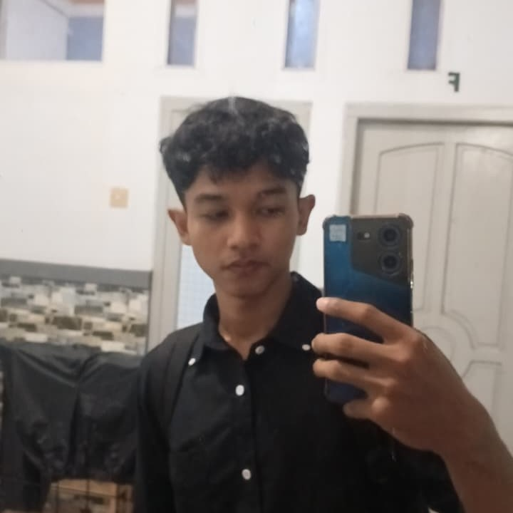

Huan Ajie Kusno
Jabatan : Pemilik Toko Kopi
Biodata Pemilik :
Saat ini, saya adalah seorang mahasiswa aktif semester 2 program studi Teknik Informatika di Fakultas Sains dan Teknologi (FST). Saya memiliki fokus yang kuat dalam pengembangan perangkat lunak, khususnya pada frontend development dan manajemen produk teknologi.
Saya memiliki keahlian mendalam dalam pengembangan web menggunakan ekosistem modern seperti HTML, CSS, JavaScript, dan Tailwind CSS untuk sisi frontend, serta Laravel dan Filament untuk pengelolaan backend dan admin panel. Dalam proses pengembangan, saya terbiasa menggunakan Visual Studio Code sebagai environment utama, memanfaatkan platform berbasis Git untuk kolaborasi tim, serta mahir dalam merancang mockup dan antarmuka pengguna (UI/UX) melalui Figma.
Selain itu, saya juga aktif dalam berbagai kegiatan kampus dan organisasi yang relevan dengan bidang teknologi, memungkinkan saya untuk memperluas jaringan dan terus mengasah kemampuan kepemimpinan serta kerja tim. Pengalaman-pengalaman ini membentuk saya menjadi individu yang adaptif, kreatif, dan selalu siap menghadapi tantangan baru di industri teknologi informasi.
Selain pengembangan web konvensional, saya juga memiliki ketertarikan dan pengalaman praktis dalam mengimplementasikan teknologi Artificial Intelligence (AI) dan Computer Vision, seperti menggunakan algoritma YOLOv8, OpenCV, dan platform Roboflow untuk proyek deteksi objek berbasis data custom.